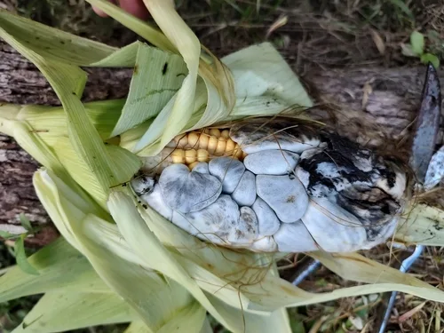

玉米穗上膨大的灰白瘤
玉米个别籽粒或部分穗体膨大，变成形状不规则的灰白囊状物。

先检查哪里
先看膨大物与果穗怎样连接。玉米普通黑粉病可使一个或一组籽粒膨大，明显超过周围正常籽粒。年轻的瘤表面可能光滑呈银灰色；老瘤会变暗、裂开，露出黑粉。完整的瘤直接拍照即可，不用特意剖开。
怎样区分相似问题
要把膨大和缺粒分开观察。授粉不良常留下空位或瘪粒，不会形成鼓起的囊状组织。玉米穗尖受虫取食可见咬伤及虫粪。如果只是籽粒变色、有霉层而未膨大，应按其他穗部问题再鉴别。
现在可以做什么
查看同株的秆、雄穗和其他果穗，再看相邻植株。记录是单个穗上有瘤，还是多株、多处都出现。家庭菜园若要清除尚未破裂的瘤，可以轻拿轻放，并一并收集掉落的病组织。
接下来观察什么
重复发生时，记下玉米品种、地块，以及出瘤前是否有冰雹或机械损伤。下次选种时可参考这些记录，田间操作时也尽量避免碰伤植株。完整瘤体及其着生部位的照片，比单独拍一撮黑粉更有诊断价值。
剥苞叶前先看外观：是内部膨大的组织将苞叶顶开，还是动物撕破苞叶后啃掉几排原本正常的籽粒？仅从破口远看，这两种情况容易混淆。